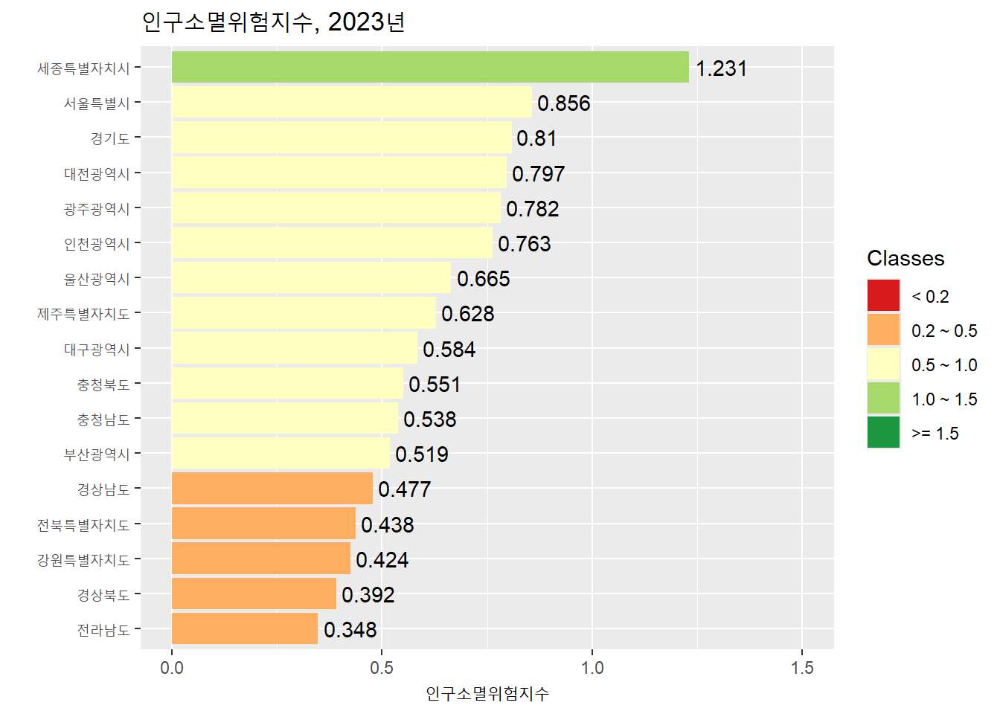

library(tidyverse)데이터 수집하기
실습 개요
이 실습은 R로 데이터를 수집하는 과정을 다루다. R을 활용한 데이터 수집은 다양한 방법으로 진행될 수 있지만 여기서는 웹상의 데이터 파일 불러오기, 웹 스크레이핑, API를 이용하는 방식에 집중한다. 우선 tidyverse 패키지를 불러온다.
1 웹상의 데이터 파일 불러오기
아마도 데이터를 수집하는 가장 단순한 방법은 웹상에 파일 형태로 존재하는 데이터를 R에서 불러오는 것일 것이다. readr 패키지에서 제공하는 다양한 데이터 불러오기 함수(예: read_csv())를 데이터의 URL에 적용하면 손쉽게 데이터를 획득할 수 있다.
students <- read_csv("https://pos.it/r4ds-students-csv")
students# A tibble: 6 × 5
`Student ID` `Full Name` favourite.food mealPlan AGE
<dbl> <chr> <chr> <chr> <chr>
1 1 Sunil Huffmann Strawberry yoghurt Lunch only 4
2 2 Barclay Lynn French fries Lunch only 5
3 3 Jayendra Lyne N/A Breakfast and lunch 7
4 4 Leon Rossini Anchovies Lunch only <NA>
5 5 Chidiegwu Dunkel Pizza Breakfast and lunch five
6 6 Güvenç Attila Ice cream Lunch only 6 그런데 엑셀 형식의 파일은 readxl 패키지가 제공하는 read_excel() 함수를 이용해서 막바로 불러올 수는 없다.
library(readxl)
read_excel("https://github.com/awalker89/openxlsx/raw/master/inst/readTest.xlsx")Error: `path` does not exist: 'https://github.com/awalker89/openxlsx/raw/master/inst/readTest.xlsx'openxlsx 패키지는 이러한 문제를 해결할 수 있게 해준다. 정말 다양한 함수를 제공하지만 read.xlsx() 함수가 URL을 통해 엑셀 데이터를 불러오는데 사용된다.
library(openxlsx)
xlsx_data <- read.xlsx("https://github.com/awalker89/openxlsx/raw/master/inst/readTest.xlsx")
xlsx_data Var1 Var2 Var3 Var4 Var5 Var6 Var7
1 TRUE 1 1.00 a 42042 3209324 This NA
2 TRUE NA NA b 42041 <NA> NA
3 TRUE 2 1.34 c 42040 <NA> NA
4 FALSE 2 NA <NA> NA <NA> NA
5 FALSE 3 1.56 e NA <NA> NA
6 FALSE 1 1.70 f 42037 <NA> NA
7 NA NA NA <NA> 42036 <NA> NA
8 FALSE 2 23.00 h 42035 <NA> NA
9 FALSE 3 67.30 i 42034 <NA> NA
10 NA 1 123.00 <NA> 42033 <NA> NA2 웹스크레이핑
웹스크레이핑(web scraping)이란 웹페이지로부터 특정한 데이터를 추출하는 것을 의미한다. R에서 웹스크레이핑은 rvest 패키지가 답당하는데, reaxl 패키지와 마찬가지로 tidyverse의 핵심 패키지는 아니기 때문에 따로 불러와야 한다.
library(tidyverse)
library(rvest)2.1 HTML 기초
거의 모든 웹페이지는 HTML(HyperText Markup Language, 하이퍼텍스트 마크업 언어)로 만들어져 있다. HTML은 웹브라우저(web browser)를 통해 표출되는 사항(무엇이 어떻게)을 프로그래밍하는 마크업(markup) 언어이다. 웹스크레이핑 맥락에서 HTML에 대한 몇 가지 기초 사항은 숙지할 필요가 있다.
웹페이지는 태그(tag)로 이루어져 있다. 각 태그는 시작 테그와 종료(끝) 태그로 구성되며, 둘 사이에 콘텐츠가 놓인다. 태그를 중심으로 개별 단위를 엘리먼트(element)라고 부르기도 한다.
태그의 종류는 다양하다. 태그는 크게 세 가지로 구분되는데, 최상위인 html 태그, 웹페이지의 전반적인 구조를 결정하는 블록(block) 태그(예: hi, section, p, ol 태그 등), 블록 태그 내부의 특정 부분에만 적용되는 인라인(inline) 태그(예: b, i, a 태그 등)가 있다. 태그는 100종 이상이 존재한다고 하는데, 그 중 많이 사용되는 것으로 다음과 같은 것들이 있다.
html 태그: 모든 웹페이지에 존재하는 최상위 태그로, 그 하위에 head 태그와 body 태그를 가져야함.
head 태그: 웹페이지의 제목이나 머릿말과 같은 메타데이터로 구성
body 태그: 본문에 해당하는 부분
title 태그: 타이틀바에 입력될 텍스트 지정
link 태그: 외부 css 파일을 연결
meta 태그: 문서의 다양한 정보를 제공
script 태그: 외부 js 파일을 연결하거나 javascript 코드를 입력
div 태그: 상자 영역을 생성
span 태그: 요소 일부분만 변경하고자 할 때 사용하는 것으로 대표적인 인라인 태그
img 태그: 이미지 태그
h 태그: 제목 생성
- h1, h2, h3, h4, h5, h6
table 태그: 표 생성
p 태그: 문단 생성
ul 태그: 번호가 없는 리스트
ol 태그: 번호가 있는 리스트
li 태그: ul 태그나 ol 태그 내에서 사용
br 태그: 줄 바꿈 기능을 하는 단독 태그
b 태그: 굵은 글씨 지정
i 태그: 이탤릭체 글씨 지정
a 태그: 링크 이동
input 태그: 입력창을 생성
button 태그: 버튼을 생성
select 태그: 선택 박스 창을 생성
form 태그: 데이터 전송
다양한 태그들이 복잡한 다단계 위계 구조를 이룬다.

태그는 속성(attribute)을 가질 수 있다.
특별히 중요한 속성: class, identity
p나 div 태그와 같은 블록 태그: height, width, margin, padding
img 태그: src, alt, width, height
a 태그: href
2.2 HTML 요소의 선택
HTML 요소란 태그와 속성으로 확정가능한 HTML의 특정 부분을 의미하는 것으로, 웹스크레이핑의 타깃의 주소와 같은 것이다.
2.2.1 단일 수준에서의 요소 선택
선택 대상을 효과적으로 규정하기 위해 사용되는 것이 CSS(cascading style sheet) 선택자(selector)이다. CSS는 HTML의 시각적 구성을 통제하는 툴인데, html의 특정 부분을 지목할 수 있는 작은 언어(miniature language)를 가지고 있고, 그것을 CSS 선택자라 부르는 것이다.
| 선택 대상 | CSS 선택자 | 결과 |
|---|---|---|
| 태그(tag) | tag1 | “tag1”이라는 이름의 모든 tag |
| 클래스(class) | .class1 | “class1”이라는 class 속성을 갖는 모든 요소 |
| 아이디(id) | #id1 | “id1”이라는 id 속성을 갖는 모든 요소 |
| tag과 class의 결합 | tag1.class1 | “tag1”이라는 tag의 “class1”이라는 class 속성을 가진 모든 요소 |
| class1와 class2의 결합 | .class1.class2 | “class1”이라는 이름의 class 속성과 “class2”라는 이름의 class 속성을 동시에 갖는 모든 요소 |
2.2.2 하위 요소의 선택
동일 수준에서 한 요소를 선택한 이후 그 하위에 있는 요소를 위계적으로 선정하는 과정이다. 만약 div 태그의 하위에 있는 span 태그의 하위에 있는 a 태그를 선택하고 싶다면 태그의 위계에 따라 요소를 나열하면 된다(div span a).
2.2.3 정확한 선택자의 확인
정확한 선택자를 확인하는 것이 성공적인 웹스크레이핑을 위한 관건이다. 보통 해당 웹페이지에서 오른쪽 마우스 버튼을 누른 뒤 “검사”를 선택하여 이리저리 살펴보아야 한다. SelectorGadget과 같은 브라우저 확장 프로그램이 도움이 될 수 있다. 링크로 들어가면 간단한 사용 방법을 살펴볼 수 있다.
Tip
다양한 웹브라우저가 있지만 웹스크레이핑에서 가장 권장되는 것은 구글(Google)의 크롬(Chrome)이다.
2.3 웹스크레이핑 단계와 rvest 함수
1단계는 웹페이지 읽기 단계이다.
read_html() 함수를 이용해 웹페이지를 읽어 들인다.
2단계는 HTML 요소의 선택 단계이다.
html_elements()함수조건의 만족 여부에 따라, 인풋보다 더 많은 혹은 더 적은 갯수의 아웃풋을 산출할 수 있음
html 전체에 적용했을 때: 조건을 만족하는 모든 케이스를 리턴
하위 요소에 적용했을 때: 조건을 만족하지 않는 케이스는 누락
주로 관측개체를 추출할 때 사용
html_element()함수조건의 만족 여부와 관계없이, 항상 인풋과 동일한 갯수의 아웃풋을 산출
html 전체에 적용했을 때: 조건을 만족하는 것들 중 첫번째 케이스만 리턴
하위 요소에 적용했을 때: 조건을 만족하지 않는 케이스도 NA의 형태로 잔존
주로 변수를 추출할 때 사용
Note
html_elements()와 html_element()의 관계를 보다 명확히 할 필요가 있다. 우선 html 문서 전체에서 특정한 선택자를 만족하는 요소를 찾는 것이 목적이라면 html_elements()를 사용하는 것이 합리적인 선택이다. 해당 조건을 만족하는 것이 둘 이상일 가능성이 높기 때문이다. 오직 하나만 있다고 확신할 수 있는 경우는 html_element()를 사용해도 무방하다. 그런데 html 문서 전체에서 만족하는 요소가 없는 경우에는 둘의 차이가 극명하게 나타난다. html_elements()는 만족하는 요소가 없으므로 아무 것도 리턴하지 않는다(실질적으로 길이가 0인 벡터를 리턴). html_element()는 인풋이 전체 html 하나 였으므로 하나의 요소(NA 요소)를 리턴한다. 그런데 이러한 차이의 중요성은 계층 체계를 따라 보다 하위 요소를 선택하고자 할 때 더 크게 드러난다. html_elements()를 통해 다수의 케이스가 선택되었고 단계적으로 하위 요소들을 선택하고자 할 때 어떤 케이스는 모든 하위 요소를 가지고 있지만 어떤 케이스는 특정 하위 요소를 누락하고 있을 수 있다. 이런 경우 하위 요소의 선택을 위해 html_elements()를 적용하게 되면, 누락된 하위 요소를 가진 케이스는 아웃풋에서 삭제된다. 즉, 누락이 없는 하위 요소의 경우는 모든 케이스가 아웃풋에 나타나지만, 누락이 있는 하위 요소의 경우는 어떤 케이스는 아웃풋에 나타나지 않게 된다. 이에 반해 html_element()은 조건의 만족 여부에 관계 없이 항상 인풋과 동일한 갯수의 아웃풋을 산출하므로, 누락된 하위 요소를 가진 케이스인 경우도 NA값을 부여받고 아웃풋에 포함된다. 이런 이유로 html_elements()는 주로 관측개체를 추출할 때 사용하고, html_element()는 주로 변수를 추출할 때 사용한다고 말하는 것이다.
3단계는 하위 요소의 선택 단계이다. 여기에는 두 가지 방식이 있다.
html_element()함수나html_elements()함수 속에 요소들을 위계에 따라 나열을 하되 요소 사이에 공란을 둔다.파이프 연사자(pipe operator)를 활용한다.
4단계는 요소로부터 데이터를 추출하는 단계이다. 다양한 함수를 적용할 수 있다.
html_table(): 테이블 데이터의 추출html_text(): 텍스트 데이터의 추출html_text2(): 불필요한 부호와 공란을 제거한 텍스트 데이터의 추출html_attr()과html_attrs(): 하위 속성 데이터의 추출
2.4 간단한 웹스크레이핑의 예
2.4.1 데이터
rvest 패키지에 내장되어 있는 예제(starwars)를 활용하여 실습을 진행한다. 웹페이지에 접속하여 어떤 내용으로 구성되어 있는지 확인한다. 앞에서 언급한 것처럼, 오른쪽 마우스 버튼을 누르고 “검사”를 선택하면 해당 패이지의 HTML 구조를 살펴볼 수 있다. 모든 영화가 다음과 같은 동일한 구조를 가지고 있음을 확인한다.
<section>
<h2 data-id="1">The Phantom Menace</h2>
<p>Released: 1999-05-19</p>
<p>Director: <span class="director">George Lucas</span></p>
<div class="crawl">
<p>...</p>
<p>...</p>
<p>...</p>
</div>
</section>우리의 웹스크레이핑 목적은 7개의 영화별로 제목(title), 연도(year), 감독(director), 요약(intro) 컬럼을 갖는 데이터 프레임을 생성하는 것이다.
2.4.2 웹스크레이핑의 과정
read_html() 함수를 이용하여 웹페이지를 읽어 들인다.
url <- "https://rvest.tidyverse.org/articles/starwars.html"
html <- read_html(url)“section” 태그 요소를 선택한다. 조건을 만족하는 모든 케이스를 추출해야 하므로 html_elements() 함수를 사용한다. 관측개체가 7개임을 확인한다.
section <- html |>
html_elements("section")
section{xml_nodeset (7)}
[1] <section><h2 data-id="1">\nThe Phantom Menace\n</h2>\n<p>\nReleased: 1999 ...
[2] <section><h2 data-id="2">\nAttack of the Clones\n</h2>\n<p>\nReleased: 20 ...
[3] <section><h2 data-id="3">\nRevenge of the Sith\n</h2>\n<p>\nReleased: 200 ...
[4] <section><h2 data-id="4">\nA New Hope\n</h2>\n<p>\nReleased: 1977-05-25\n ...
[5] <section><h2 data-id="5">\nThe Empire Strikes Back\n</h2>\n<p>\nReleased: ...
[6] <section><h2 data-id="6">\nReturn of the Jedi\n</h2>\n<p>\nReleased: 1983 ...
[7] <section><h2 data-id="7">\nThe Force Awakens\n</h2>\n<p>\nReleased: 2015- ...제목과 감독명에 대한 선택자가 각각 h2 태그와 director 클래스에 들어가 있음을 알 수 있다. html_element()와 html_text2() 함수를 활용하여 데이터를 추출한다. 앞에서 언급한 것처럼 구체적인 변수를 생성하기 위한 작업에는 케이스의 누락을 방지하기 위해 html_element()를 사용한다. html_text() 함수도 존재하지만 더 좋은 결과물을 얻을 수 있는 html_text2() 함수를 항상 사용한다.
section |>
html_element("h2") |>
html_text2()[1] "The Phantom Menace" "Attack of the Clones"
[3] "Revenge of the Sith" "A New Hope"
[5] "The Empire Strikes Back" "Return of the Jedi"
[7] "The Force Awakens" section |>
html_element(".director") |>
html_text2()[1] "George Lucas" "George Lucas" "George Lucas" "George Lucas"
[5] "Irvin Kershner" "Richard Marquand" "J. J. Abrams" 2.5 웹스크레이핑의 실제 1: 테이블이 하나 있는 경우
위키피디어의 전 세계 국가 관련 항목(List of countries and dependencies by population)에는 표가 하나 들어있는데, 해당 표의 데이터를 웹스크레이핑 기법을 활용해 수집해 보기로 한다. 테이블이 하나이므로 html_element() 함수를 사용하고, 데이터 형식이 테이블이므로 html_table() 함수를 적용한다.
url <- "https://en.wikipedia.org/wiki/List_of_countries_and_dependencies_by_population"
my_table <- url |>
read_html() |>
html_element("table") |>
html_table()
my_table# A tibble: 241 × 7
`` Location Population `% ofworld` Date Source (official or …¹ ``
<chr> <chr> <chr> <chr> <chr> <chr> <chr>
1 – World 8,119,186… 100% 19 J… UN projection[3] ""
2 1/2 [b] China 1,409,670… 17.4% 31 D… Official estimate[5] "[c]"
3 1/2 [b] India 1,404,910… 17.3% 1 Ju… Official projection[6] "[d]"
4 3 United Sta… 335,893,2… 4.1% 1 Ja… Official estimate[7] "[e]"
5 4 Indonesia 281,603,8… 3.5% 1 Ju… National annual proje… ""
6 5 Pakistan 241,499,4… 3.0% 1 Ma… 2023 census result[9] "[f]"
7 6 Nigeria 223,800,0… 2.8% 1 Ju… Official projection[1… ""
8 7 Brazil 203,080,7… 2.5% 1 Au… 2022 census result[11] ""
9 8 Bangladesh 169,828,9… 2.1% 14 J… 2022 census result[12] ""
10 9 Russia 146,150,7… 1.8% 1 Ja… Official estimate[13] "[g]"
# ℹ 231 more rows
# ℹ abbreviated name: ¹`Source (official or fromthe United Nations)`결과물이 정돈된 데이터가 아니다. 앞에서 배운 기법을 활용해 데이터를 정리한다.
my_table_new <- my_table |>
select(-1, -7) |>
rename(
location = "Location",
population = "Population",
pop_pct = "% ofworld",
date = "Date",
source = "Source (official or fromthe United Nations)"
) |>
mutate(
population = parse_number(population, ","),
population = as.numeric(population),
pop_pct = str_remove_all(pop_pct, "%"),
pop_pct = as.numeric(pop_pct),
date = dmy(date)
)
my_table_new# A tibble: 241 × 5
location population pop_pct date source
<chr> <dbl> <dbl> <date> <chr>
1 World 8119186000 100 2024-07-19 UN projection[3]
2 China 1409670000 17.4 2023-12-31 Official estimate[5]
3 India 1404910000 17.3 2024-07-01 Official projection[6]
4 United States 335893238 4.1 2024-01-01 Official estimate[7]
5 Indonesia 281603800 3.5 2024-07-01 National annual projection[8]
6 Pakistan 241499431 3 2023-03-01 2023 census result[9]
7 Nigeria 223800000 2.8 2023-07-01 Official projection[10]
8 Brazil 203080756 2.5 2022-08-01 2022 census result[11]
9 Bangladesh 169828911 2.1 2022-06-14 2022 census result[12]
10 Russia 146150789 1.8 2024-01-01 Official estimate[13]
# ℹ 231 more rows
Note
코드에 포함된 parse_number()과 str_remove_all() 함수는 매우 유용한 함수이므로 잘 익혀 둘 필요가 있다. parse_number()함수는 readr 패키지에 포함되어 있는 것으로, 투입 벡터에서 오로지 숫자만 골라내 실수형 벡터를 생성해준다. 위의 예를 보자면, my_table 데이터 프레임의 population 컬럼은 인구수와 콤마가 결합된 문자형 벡터이므로 콤마를 제거하고 숫자만 추출할 필요가 있다. 유사한 함수에 parse_logical(), parse_integer(), parse_double(), parse_character(), parse_factor() 등이 있다. str_remove_all() 함수는 tidyverse의 핵심 패키지 중의 하나인 stringr 패키지에 포함되어 있는 것으로, 투입 벡터에서 특정한 문자나 문자 패턴을 제거해 준다. 위의 예를 보자면, my_table 데이터 프레임의 pop_pct 컬럼에는 %라는 부호가 포함되어 있기 때문에 그것을 제거할 필요가 있다. 그러므로 str_remove_all() 함수는 셀에 포함되어 있는 특정 문자 모두를 제거할 때 사용할 수 있는 함수이다. 유사한 함수에 str_remove()도 있는데, 이것은 셀에 포함되어 있는 특정 문자 중 단지 첫 번째 것만 제거한다. 문자열을 잘 다루려면 정규표현식(regular expression)에 대한 상당한 이해가 있어야 한다. 다음의 링크가 도움이 될 수 있을 것이다. https://bookdown.org/ahn_media/bookdown-demo/cleantool.html#%EC%A0%95%EA%B7%9C%ED%91%9C%ED%98%84%EC%8B%9Dregular-expressions
종종 웹스크레이핑으로 불러온 한글 데이터가 깨지는 경우가 있다. read_html() 함수 속에 encoding 아규먼트에 “EUC-KR”이나 “UTF-8”을 지정하면 된다.
kospi <- "https://finance.naver.com/sise/sise_quant.naver?sosok=0"
kospi_table <- kospi |>
read_html(encoding = "EUC-KR") |>
html_elements("table") |>
html_table()
kospi_table[[1]]
# A tibble: 5 × 6
X1 X2 X3 X4 X5 X6
<chr> <chr> <chr> <chr> <chr> <chr>
1 "거래량" "매수호가" "거래대금(백만)" 시가총액(억) 영업이익(억) PER(배)
2 "시가" "매도호가" "전일거래량" 자산총계(억) 영업이익증가율 ROE(%)
3 "고가" "매수총잔량" "외국인비율" 부채총계(억) 당기순이익(억) ROA(%)
4 "저가" "매도총잔량" "상장주식수(천주)" 매출액(억) 주당순이익(원) PBR(배)
5 "" "" "" 매출액증가율 보통주배당금(원) 유보율…
[[2]]
# A tibble: 161 × 12
N 종목명 현재가 전일비 등락률 거래량 거래대금 매수호가 매도호가 시가총액
<int> <chr> <chr> <chr> <chr> <chr> <chr> <chr> <chr> <chr>
1 NA "" "" "" "" "" "" "" "" ""
2 1 "KODEX… "1,88… "상승… "+2.3… "198,… "374,45… "1,883" "1,884" "18,207"
3 2 "일신… "1,48… "상승… "+6.6… "40,8… "62,974" "1,485" "1,486" "1,150"
4 3 "인디… "961" "상승… "+5.4… "31,7… "32,569" "961" "964" "722"
5 4 "KODEX… "3,54… "하락… "-0.9… "26,7… "95,724" "3,535" "3,540" "3,501"
6 5 "에이… "1,33… "상승… "+17.… "26,4… "33,737" "1,334" "1,335" "1,767"
7 NA "" "" "" "" "" "" "" "" ""
8 NA "" "" "" "" "" "" "" "" ""
9 NA "" "" "" "" "" "" "" "" ""
10 6 "GS글… "3,66… "상승… "+6.0… "24,8… "89,992" "3,660" "3,665" "3,025"
# ℹ 151 more rows
# ℹ 2 more variables: PER <chr>, ROE <chr>여기서는 리시트가 산출되었으므로 다음과 같은 방식으로 데이터 프레임을 생성한다.
kospi_res <- kospi_table |>
_[[2]] |>
filter(!is.na(N))
kospi_res |>
slice_head(n = 5)# A tibble: 5 × 12
N 종목명 현재가 전일비 등락률 거래량 거래대금 매수호가 매도호가 시가총액
<int> <chr> <chr> <chr> <chr> <chr> <chr> <chr> <chr> <chr>
1 1 KODEX 2… 1,884 "상승… +2.39% 198,1… 374,452 1,883 1,884 18,207
2 2 일신석재 1,485 "상승… +6.60% 40,85… 62,974 1,485 1,486 1,150
3 3 인디에프 961 "상승… +5.49% 31,70… 32,569 961 964 722
4 4 KODEX … 3,540 "하락… -0.98% 26,79… 95,724 3,535 3,540 3,501
5 5 에이프… 1,335 "상승… +17.3… 26,45… 33,737 1,334 1,335 1,767
# ℹ 2 more variables: PER <chr>, ROE <chr>2.6 웹스크레이핑의 실제 2: 테이블이 둘 이상인 경우
위키피디어의 국가별 약어 관련 항목(List of FIPS country codes)에는 동일한 내용이 여러개로 표로 나뉘어 제시되어 있다. 개별 표의 데이터를 수집한 후 결합하여 단일한 데이터 프레임을 구성할 필요가 있다. 테이블이 여러개이므로 html_elements() 함수를 사용한다. bind_rows() 함수를 활용하여 테이블들을 하나의 테이블로 만든다.
url <- "https://en.wikipedia.org/wiki/List_of_FIPS_country_codes"
my_tables <- url |>
read_html() |>
html_elements("table") |>
html_table() |>
bind_rows()
my_tables# A tibble: 283 × 10
Code `Short-form name` .mw-parser-output .n…¹ .mw-parser-output .n…² ...3
<chr> <chr> <chr> <chr> <chr>
1 .mw-pa… Aruba <NA> <NA> <NA>
2 AC Antigua and Barb… <NA> <NA> <NA>
3 AE United Arab Emir… <NA> <NA> <NA>
4 AF Afghanistan <NA> <NA> <NA>
5 AG Algeria <NA> <NA> <NA>
6 AJ Azerbaijan <NA> <NA> <NA>
7 AL Albania <NA> <NA> <NA>
8 AM Armenia <NA> <NA> <NA>
9 AN Andorra <NA> <NA> <NA>
10 AO Angola <NA> <NA> <NA>
# ℹ 273 more rows
# ℹ abbreviated names:
# ¹`.mw-parser-output .navbar{display:inline;font-size:88%;font-weight:normal}.mw-parser-output .navbar-collapse{float:left;text-align:left}.mw-parser-output .navbar-boxtext{word-spacing:0}.mw-parser-output .navbar ul{display:inline-block;white-space:nowrap;line-height:inherit}.mw-parser-output .navbar-brackets::before{margin-right:-0.125em;content:"[ "}.mw-parser-output .navbar-brackets::after{margin-left:-0.125em;content:" ]"}.mw-parser-output .navbar li{word-spacing:-0.125em}.mw-parser-output .navbar a>span,.mw-parser-output .navbar a>abbr{text-decoration:inherit}.mw-parser-output .navbar-mini abbr{font-variant:small-caps;border-bottom:none;text-decoration:none;cursor:inherit}.mw-parser-output .navbar-ct-full{font-size:114%;margin:0 7em}.mw-parser-output .navbar-ct-mini{font-size:114%;margin:0 4em}@media screen{html.skin-theme-clientpref-night .mw-parser-output .navbar li a abbr{color:var(--color-base)!important}}@media screen and (prefers-color-scheme:dark){html.skin-theme-clientpref-os .mw-parser-output .navbar li a abbr{color:var(--color-base)!important}}vteGeocode systems...1`,
# ²`.mw-parser-output .navbar{display:inline;font-size:88%;font-weight:normal}.mw-parser-output .navbar-collapse{float:left;text-align:left}.mw-parser-output .navbar-boxtext{word-spacing:0}.mw-parser-output .navbar ul{display:inline-block;white-space:nowrap;line-height:inherit}.mw-parser-output .navbar-brackets::before{margin-right:-0.125em;content:"[ "}.mw-parser-output .navbar-brackets::after{margin-left:-0.125em;content:" ]"}.mw-parser-output .navbar li{word-spacing:-0.125em}.mw-parser-output .navbar a>span,.mw-parser-output .navbar a>abbr{text-decoration:inherit}.mw-parser-output .navbar-mini abbr{font-variant:small-caps;border-bottom:none;text-decoration:none;cursor:inherit}.mw-parser-output .navbar-ct-full{font-size:114%;margin:0 7em}.mw-parser-output .navbar-ct-mini{font-size:114%;margin:0 4em}@media screen{html.skin-theme-clientpref-night .mw-parser-output .navbar li a abbr{color:var(--color-base)!important}}@media screen and (prefers-color-scheme:dark){html.skin-theme-clientpref-os .mw-parser-output .navbar li a abbr{color:var(--color-base)!important}}vteGeocode systems...2`
# ℹ 5 more variables: ...4 <chr>, ...5 <chr>, ...6 <chr>, X1 <chr>, X2 <chr>앞에서 배운 기법을 활용해 데이터를 정리한다.
my_tables_new <- my_tables |>
select(1, 2) |>
rename(
code = "Code",
short_name = "Short-form name"
) |>
mutate(
code = str_extract(code, "[A-Z][A-Z]")
)
my_tables_new# A tibble: 283 × 2
code short_name
<chr> <chr>
1 AA Aruba
2 AC Antigua and Barbuda
3 AE United Arab Emirates
4 AF Afghanistan
5 AG Algeria
6 AJ Azerbaijan
7 AL Albania
8 AM Armenia
9 AN Andorra
10 AO Angola
# ℹ 273 more rows
Note
str_extract() 함수는 str_remove_all() 함수와 마찬가지로 tidyverse의 핵심 패키지 중의 하나인 stringr 패키지에 포함되어 있는 것으로, 벡터에서 특정한 문자나 문자 패턴을 추출해 준다. 무슨 이유에선지 모르겠지만 웹스크레이핑 결과 도출된 my_tables의 code 컬럼의 첫 번째 행에는 “.mw-parser-output .monospaced{font-family:monospace,monospace}AA”와 같은 이상한 정보가 포함되어 있다. 우리가 필요로 하는 것은 맨 끝에 있는 국가 약어인 AA이므로 그것만 추출해야 한다. str_extract() 함수 속에 포함되어 있는 “[A-Z][A-Z]”는 문자 패턴을 나타내는 것으로 “알파벳 대문자 두개가 연결되어 있는 것”을 의미한다. 그러므로 code 컬럼의 다른 모든 행에는 알파벳 대문자가 두 개 연결된 형태로 되어 있으므로 천 번째 열에서 AA를 추출해 최종적인 데이터를 산출한다.
2.7 웹스크레이핑의 실제 3: 네이버 뉴스 데이터 수집하기
2.7.1 기간을 설정하지 않은 경우
네이버 신문(https://news.naver.com/)에 키워드(예: 지방소멸)로 검색한 기사를 제목과 내용으로 나누어 데이터를 수집한다. 위에서 익힌 rvest 패키지의 함수들을 이용해 이 작업을 수행할 수 있다. 그런데 문제가 있는데, 실행을 해보면, 단지 10개의 케이스에 대해서만 데이터가 수집된다.
url <- "https://search.naver.com/search.naver?where=news&ie=utf8&sm=nws_hty&query=%EC%A7%80%EB%B0%A9%EC%86%8C%EB%A9%B8"
title <- url |>
read_html() |>
html_elements(".news_tit") |>
html_text2()
contents <- url |>
read_html() |>
html_elements(".dsc_txt_wrap") |>
html_text2()
my_news <- tibble(title, contents)
my_news2.7.2 기간을 설정한 경우
동일한 방법을 활용해, 특정한 기간을 설정하여 데이터를 수집할 수 있다. 여기서는 2023년 1월 1일부터 2023년 12월 31일까지로 기간을 설정하여 데이터를 수집한다. 위의 경우와 마찬가지로 단지 10개의 케이스에 대해서만 데이터가 수집된다.
start.date <- "2023.01.01"
end.date <- "2023.12.31"
url <- str_c("https://search.naver.com/search.naver?where=news&query=%EC%A7%80%EB%B0%A9%EC%86%8C%EB%A9%B8&sm=tab_opt&sort=0&photo=0&field=0&pd=3&ds=", start.date, "&de=", end.date, "&docid=&related=0&mynews=0&office_type=0&office_section_code=0&news_office_checked=&nso=so%3Ar%2Cp%3Afrom20230101to20231231&is_sug_officeid=0&office_category=0&service_area=0")
title <- url |>
read_html() |>
html_elements(".news_tit") |>
html_text2()
contents <- url |>
read_html() |>
html_elements(".dsc_txt_wrap") |>
html_text2()
my_news <- tibble(title, contents)
my_news
Warning
종래에는 위와 같은 방식에 반복 프로그래밍을 결합하면 원하는 케이스만큼의 데이터를 구할 수 있었다. 많은 웹사이트들이 웹스크레이핑을 방지하는 장치들을 하고 있고, 그러한 조치의 영향이 아닌가 추측한다. 따라서 뒤에서 다루게될 API를 이용하는 방식으로 옮아갈 필요가 있다.
3 API의 활용
3.1 정의
API(application programming interface)는 복수의 프로그램들이 서로 상호작용하는 방법을 정의하는 일련의 규칙을 의미한다. 다른 말로 하면 한 프로그램이 다른 프로그램의 기능들을 불러 사용할 수 있게 해주는 통로를 의미한다.
이런 API 개념이 데이터 수집과 관련하여 중요한 의미를 가지는 것은 개방 API(open API) 때문이다. 개방 API는 데이터를 보유하고 있는 공적 기관이 데이터의 사용 권한을 사용자들에게 부여함으로써 데이터에 대한 접근 가능성을 높여주기 때문이다.
만일 개방 API가 존재하는 상황이라면 데이터사이언스의 가장 좋은 데이터 수집 방법은 오픈 API를 활용하는 것이다.
3.2 R에서 API를 활용한 데이터 수집
최근까지 API를 활용한 데이터 수집에는 httr과 jsonlite라는 두 개의 패키지가 함께 사용되었다. 그런데 최근 httr의 완전 업그레이드 버전인 httr2가 선을 보이면서 이 패키지를 단독으로 활용하는 방식이 주목 받고 있다(https://httr2.r-lib.org/). httr2는 R의 tidyverse 운동을 이끌고 있는 해들리 위컴(Hadley Wickham)이 tidyverse의 철학에 맞추어 httr 패키지를 발전시킨 것이다. 이러한 R 패키지를 직접 활용하는 것이 가장 좋은 방법이겠지만, 초보자의 경우 다소간의 어려움을 겪을 수 있다. httr2 함수가 다른 패키지의 함수에 비해 개념적으로 이해하기 어려운 측면이 있기 때문이기도 하고, 데이터를 획득하는 구체적인 과정이 API 마다 조금씩 다르기 때문이기도 하다.
이러한 어려움을 들어주기 위해 일종의 연결 패키지들이 개발되어 있는데, 이러한 패키지를 래퍼 패키지(wrapper package)라고 부른다. 래퍼 패키지들은 사용자와 API 수집용 패키지 사이에서 일종의 가교 역할을 하는 것으로, 사용자들이 사용하기 편한 함수를 제공함으로써 보다 손쉽게 오픈 API를 활용할 수 있게 도와준다. 예를 들어, 구글맵스플랫폼(Google Maps Platform)에 API로 접근해 다양한 기능을 활용할 수 있게 도와주는 googleway와 같은 패키지가 좋은 예가 될 수 있다.
3.3 API를 활용한 KOSIS 데이터의 수집
KOSIS를 포함한 많은 대한민국의 데이터 포털은 개방 API 서비스를 제공하고 있다. KOSIS는 공유서비스 홈페이지(https://kosis.kr/openapi/)를 통해 Open API를 통한 데이터 수집을 권장하고 있다. 개발 가이드(https://kosis.kr/openapi/devGuide/devGuide_0101List.do)를 통해 R을 포함한 다양한 프로그래밍 언어에서 KOSIS의 개방 API 서비스를 활용하는 구체적인 코드를 제공하고 있기도 하다. 가이드 북을 읽어 보면, 앞에서 언급한 R의 httr, jsonlite, rvest와 같은 패키지가 활용됨을 알 수 있다.
앞에서 설명한 것처럼, API용 패키지를 직접 사용할 수도 있지만, 래퍼 패키지가 존재하기만 한다면 그것을 활용하는 것이 훨씬 손쉬운 옵션일 수 있다. 놀랍게도 한국의 주석훈(Seokhoon Joo)이라는 분이 그러한 기능을 하는 kosis(https://cran.r-project.org/web/packages/kosis/)라는 패키지를 이미 개발해 두었고, 그것을 활용하고자 한다.
실습 주제는 2022년 센서스 인구 기준으로 전국의 17개 시도별 ’지방소멸위험지수’를 계산하고 그래프의 형태로 표현하는 것이다.
3.3.1 KOSIS에서 API KEY 받기
KOSIS 공유서비스 웹페이지(https://kosis.kr/openapi/) 접속
상단의 [활용신청] 탭 클릭
- 통계청의 ONE-ID로 통합로그인(없으면 회원가입 필수)
활용신청하여 사용자 인증키 획득
- 사용자 인증키는 마이페이지에서 언제든 확인 가능
3.3.2 패키지 설치 및 인증키 등록
우선 kosis 패키지를 오른쪽 하단 윈도우의 Packages 탭을 활용하여 인스톨한다. 이후에 아래와 같이 kosis와 tidyverse 패키지를 불러온다.
library(kosis)
library(tidyverse)kosis 패키지의 kosis.setKey() 함수를 이용하여 인증키를 등록한다. Your Key Here 자리에 부여받은 인증키를 붙여 넣는다.
kosis.setKey(apikey = "Your Key Here")3.3.3 데이터 추출
가장 유용한 방식은 kosis 패키지의 getStatDataFromURL() 함수를 활용하는 것이다. KOSIS의 데이터 서비스 구조를 감안할 때 이 것이 좀 더 용이한 방식일 수 있다. 데이터 추출은 다음과 같이 두 단계의 과정을 거친다.
KOSIS에서 필요한 데이터의 위치에 대한 URL 정보를 획득한다.
getStatDataFromURL()함수를 활용하여 데이터를 추출한다.
구체적인 수행 과정은 다음과 같다.
첫째, KOSIS(https://kosis.kr/)에 로그인한다. 이것은 api key를 활용하기 위한 필수 조건이다.
둘째, 인구 센서스 데이터를 바탕으로 시도별 지방소멸위험지수를 계산하고자 하기 때문에, 최신 인구 센서스의 지역별 20~39세의 여성 인구와 65세 이상의 전체 인구에 대한 데이터가 필요하다. KOSIS 홈페이지를 탐색하여 필요한 데이터가 있는 위치를 찾아간다.
- [국내통계]-[주제별 통계]-[인구]-[인구총조사]-[인구부문]-[총조사인구(2015년 이후)]-[전수부문 (등록센서스, 2015년 이후)]-[전수기본표]-[연령 및 성별 인구]
셋째, ’조회설정’을 클릭하여 다음과 같이 선택한다.
항목: ‘총인구(명)’, ‘총인구_남자(명)’, ’총인구_여자(명)’만 선택(더 많은 항목을 선택하면 데이터가 너무 커 에러가 발생)
행정구역별(읍면동): ‘1 레벨’과 ’2 레벨’ 선택(’1 레벨’은 시도 수준, ’2 레벨’은 시군구 수준)
넷째, ‘조회설정’ 창을 없앤 후(조회창의 왼편 가운데의 화살표 클릭), 표의 오른편 상단에 있는 여러개 탭 중 ‘OPENAPI’ 탭을 클릭한다. 다음과 같이 선택한다.
조회기간 설정: ‘기간설정’ 버턴을 누른 후, 기간설정이 2022~2022년인지 확인한다.
응답필드 설정: 하나씩 눌러 모두 선택한 후, ‘URL생성’ 탭을 클릭한다. 그리고 나서 ‘URL 복사’ 탭을 클릭한다. URL 속에 api key가 포함되어 있음을 확인한다.
다섯째, 다음과 같이 실행한다. “Your URL” 자리에 복사한 URL를 붙여 넣는다.
your_url <- "Your URL"
data_api <- getStatDataFromURL(url = your_url)
data_api |>
slice_head(n = 5) ORG_ID TBL_ID
1 101 DT_1IN1503
2 101 DT_1IN1503
3 101 DT_1IN1503
4 101 DT_1IN1503
5 101 DT_1IN1503
TBL_NM C1 C1_NM
1 연령 및 성별 인구 – 읍면동(연도 끝자리 0 5) 시군구(그 외 연도) 00 전국
2 연령 및 성별 인구 – 읍면동(연도 끝자리 0 5) 시군구(그 외 연도) 00 전국
3 연령 및 성별 인구 – 읍면동(연도 끝자리 0 5) 시군구(그 외 연도) 00 전국
4 연령 및 성별 인구 – 읍면동(연도 끝자리 0 5) 시군구(그 외 연도) 00 전국
5 연령 및 성별 인구 – 읍면동(연도 끝자리 0 5) 시군구(그 외 연도) 00 전국
C1_OBJ_NM C2 C2_NM C2_OBJ_NM ITM_ID ITM_NM
1 행정구역별(읍면동) 000 합계 연령별 T00 총인구(명)
2 행정구역별(읍면동) 000 합계 연령별 T01 총인구_남자(명)
3 행정구역별(읍면동) 000 합계 연령별 T02 총인구_여자(명)
4 행정구역별(읍면동) 005 0~4세 연령별 T00 총인구(명)
5 행정구역별(읍면동) 005 0~4세 연령별 T01 총인구_남자(명)
ITM_NM_ENG PRD_SE PRD_DE DT
1 Population A 2022 51692272
2 Population_Male A 2022 25835298
3 Population_Female A 2022 25856974
4 Population A 2022 1459301
5 Population_Male A 2022 7480563.3.4 데이터 정리 및 변형
아래와 같이 데이터를 정리한다. 최종적으로 지역별 지역소멸위험지수를 산출한다.
data <- data_api |>
select(C1, C1_NM, C2, C2_NM, ITM_ID, ITM_NM, DT) |>
mutate(
across(c(C1, DT), as.numeric),
ITM_ID = case_match(
ITM_ID,
"T00" ~ "T",
"T01" ~ "M",
"T02" ~ "F"),
) |>
unite("gender_age", ITM_ID, C2_NM, sep = "_") |>
pivot_wider(
id_cols = c(C1, C1_NM),
names_from = gender_age,
values_from = DT
) |>
mutate(
index = (`F_20~24세` + `F_25~29세` + `F_30~34세` + `F_35~39세`) / `T_65세이상`
) |>
select(
C1, C1_NM, index
)
Note
여기서는 case_match() 함수에 주목할 필요가 있다. case_match() 함수는 데이터 변형을 위한 tidyverse의 핵심 패키지인 dplyr의 벡터 함수로서, 벡터의 각 요소에 조건 부합성을 검토하고 그것을 통해 새로운 값을 부여할 수 있게 해준다(과거에 recode()라 불렸던 함수이다). 우선 변환을 위한 컬럼을 지정하고, ~ 기호를 중심으로 왼편에 현재의 값을, 오른편에 새로운 값을 놓으면 된다. 보통 여러 조건을 나열해 모든 케이스가 새로운 값을 갖게 하지만, 간혹 해당 되는 조건이 없는 케이스를 위해 .default 아규먼트를 사용한다. forcat 패키지에서 문자형 벡터의 레벨(level)을 새로운 레벨로 교체하는데 사용되는 fct_recode() 함수와 유사하다. case_match() 함수와 유사한 함수에 case_when()가 있다. case_match() 함수가 단일 컬럼의 개별 값을 전환할 때 사용되는 함수라면, case_when()은단일 컬럼에 다양한 조건을 설정하거나 두 개 이상의 컬럼이 개입되는 경우에 사용할 수 있는 함수이다. 따라서 case_match() 함수의 경우는 컬럼명이 한 번만 등장하면 되지만, case_when()에서는 개별 조건에 해당 컬럼명이 등장해야 한다. 아래의 그래프에 활용의 예가 나타나 있다.
시도 데이터와 시군구 데이터를 분리하여 저장한다.
data_sido <- data |>
filter(nchar(C1) == 2)
data_sigungu <- data |>
filter(nchar(C1) == 5 & !C1_NM %in% c("동부", "면부", "읍부") & str_sub(C1, 5, 5) == 0)
write_rds(data_sigungu, "data_sigungu.rds")
read_rds("data_sigungu.rds")# A tibble: 229 × 3
C1 C1_NM index
<dbl> <chr> <dbl>
1 11010 종로구 0.965
2 11020 중구 0.931
3 11030 용산구 1.02
4 11040 성동구 1.00
5 11050 광진구 1.20
6 11060 동대문구 0.994
7 11070 중랑구 0.751
8 11080 성북구 0.929
9 11090 강북구 0.589
10 11100 도봉구 0.578
# ℹ 219 more rows3.3.5 그래프 작성
그래프 작성의 코드가 다소 복잡해 보인다. 이렇게 된 것은 인구소멸위험지수 연구에서 주로 사용되는 5개의 위험도 클래스의 구분법을 적용하고, 위험도 클래스별로 특정한 색상을 적용하고, 그래프의 범례에 5개의 클래스가 모두 나타나게 하려했기 때문이다.
data_sido_new <- data_sido |>
mutate(
index_class = case_when(
index < 0.2 ~ "1",
index >= 0.2 & index < 0.5 ~ "2",
index >= 0.5 & index < 1.0 ~ "3",
index >= 1.0 & index < 1.5 ~ "4",
index >= 1.5 ~ "5"
),
index_class = fct(index_class, levels = as.character(1:5))
)
class_color <- c("1" = "#d7191c", "2" = "#fdae61",
"3" = "#ffffbf", "4" = "#a6d96a",
"5" = "#1a9641")
data_sido_new |>
ggplot(aes(x = index, y = fct_reorder(C1_NM, index))) +
geom_col(aes(fill = index_class), show.legend = TRUE) +
geom_text(aes(label = round(index, digits = 3)), hjust = -0.1) +
scale_x_continuous(limits = c(0, 1.5)) +
scale_fill_manual(name = "Classes",
labels = c("< 0.2", "0.2 ~ 0.5", "0.5 ~ 1.0",
"1.0 ~ 1.5", ">= 1.5"),
values = class_color, drop = FALSE) +
labs(title = "인구소멸위험지수, 2022년",
x = "인구소멸위험지수",
y = "")
Note
우선 tidyverse에서 문자열에 특화된 핵심 패키지인 forcat의 두 함수에 대해 언급하고자 한다. fct()는 가장 기본이 되는 함수로 일반 문자형 컬럼을 팩터형(factor) 컬럼으로 전환해주는 함수이다. 동시에 레벨을 지정할 수 있다. fct_reorder() 함수는 팩터 벡터의 기존 레벨의 순서를 바꾸어주는 여러 함수들 중 하나이다. fct_reorder()는 특정 변수의 레벨 순서를 다른 변수의 값의 순서에 의거해 바꾸어준다. 비슷한 함수에 fct_reorder2()가 있는데, 이것은 특정 변수의 레벨 순서를 다른 변수의 값의 순서에 의거하여 바꾸되 그 다른 변수의 값을 또 다른 변수를 통해 규정하고자 할 때 사용할 수 있다. 위의 예를 든다면, 시도의 순서를 인구소멸위험지수의 크기에 따라 배열하되, 만약 여러 연도에 걸쳐 인구소멸위험지수가 계산되었을 경우, 특정 연도(주로 가장 큰 연도)의 값에 의거해 배열하는 것이다. 이외에 레벨의 순서를 메뉴얼하게 바꿀 수 있는 fct_relevel() 함수, 레벨의 순서를 역방향으로 바꿀 수 있는 fct_rev() 함수가 빈번하게 사용된다. ggplot2 패키지의 scale_fill_manual() 함수 역시 매우 중요한 역할을 한다. 이것은 막대 그래프를 채울 컬러의 스케일링을 사용자가 메뉴얼하게 할 수 있게 해주는데, 컬러 팔레트(class_color), 범례의 표제와 라벨을 메뉴얼하게 적용할 수 있다. 마지막에 있는 drop = FALSE 아규먼트가 매우 중요한 역할을 한다. 그래프를 보면 시도 수준의 인구소멸위험지수는 양 극단의 두 계급에 케이스를 갖지 않는다. 전체 계급을 보여주는 것이 의미있다고 판단한다면, drop = FALSE 아규먼트를 통해 모든 계급이 범례에 드러나게 할 수 있다.
3.3.6 또 다른 방식
또 다른 방식은 kosis 패키지의 getStatData() 함수를 활용하는 것이다. 해당 함수에 기관명(101)과 데이터 코드(DT_1IN503)을 아규먼트에 입력하면 데이터를 불러올 수 있다. 위의 방식의 한 연도의 모든 지역에 대한 데이터를 얻기에 용이하다면, 이 방식은 하나의 지역에 대한 시계열 데이터를 수집하는데 유용하다. 아래의 코드를 통해 서울시 종로구(코드: 11010)의 2015~2022년 데이터를 획득할 수 있다.
region_code <- "11010"
data_api <- getStatData(
orgId = 101,
tblId = "DT_1IN1503",
prdSe = "Y",
startPrdDe = "2015",
endPrdDe = "2022",
objL1 = region_code,
objL2 = "ALL") |>
filter(str_length(C2) == 3)
Tip
region_code <- “11010”+“11020”과 같은 식으로 설정하면 두 개 이상의 지역에 대한 데이터를 한꺼번에 구할 수도 있다.
아래와 같은 데이터 정리 및 변형 과정이 필요하다.
data <- data_api |>
select(C1, C1_NM, C2, C2_NM, ITM_ID, ITM_NM, DT, PRD_DE) |>
filter(ITM_ID == "T00" | ITM_ID == "T01" | ITM_ID == "T02") |>
mutate(
across(c(C1, DT), as.numeric),
ITM_ID = case_match(
ITM_ID,
"T00" ~ "T",
"T01" ~ "M",
"T02" ~ "F"),
) |>
unite("gender_age", ITM_ID, C2_NM, sep = "_") |>
pivot_wider(
id_cols = c(C1, C1_NM, PRD_DE),
names_from = gender_age,
values_from = DT
) |>
mutate(
index = (`F_20~24세` + `F_25~29세` + `F_30~34세` + `F_35~39세`) / `T_65세이상`
) |>
select(
C1, C1_NM, index, PRD_DE
) 이 데이터를 바탕으로 종로구의 인구소멸위험지수의 변화 추이를 관찰할 수 있다.
region <- data |> distinct(C1_NM) |> pull()
data |>
ggplot(aes(x = PRD_DE, y = index)) +
geom_point() +
geom_line(group = 1, linewidth = 0.5) +
ggtitle(paste0(region, " 인구소멸위험지수 추이")) +
xlab(label = "연도") +
ylab(label = "인구소멸위험지수") +
theme(plot.title = element_text(size = 18, hjust=0.5))이 모든 과정을 함수로 만들고, Base R의 read_line() 함수를 활용하면 초보적인 상호작용형 도구를 만들 수 있다.
exInd <- function(){
# Library
library(tidyverse)
library(kosis)
library(DT)
library(openxlsx)
# Table for Searching Region Code
region_table <- read.xlsx("https://github.com/Sechang-Kim/gis-lab/raw/download/korea-sigungu-code(2022).xlsx")
print(datatable(region_table))
# Input Arguments
aoi_code <- readline('지역 코드를 입력하세요: ')
start <- as.numeric(readline('시작 연도를 입력하세요: '))
end <- as.numeric(readline('종료 연도를 입력하세요: '))
# Data Request
aoi <- getStatData(orgId = 101, tblId = "DT_1IN1503", prdSe = "Y",
startPrdDe = start, endPrdDe = end,
objL1 = aoi_code, objL2 = "ALL") |>
filter(nchar(C2) == 3) # Delete 1-age interval(Only 5-age interval)
# Data Cleansing
aoi <- aoi |>
select(C1, C1_NM, C2, C2_NM, ITM_ID, ITM_NM, DT, PRD_DE) |>
filter(ITM_ID == "T00" | ITM_ID == "T01" | ITM_ID == "T02") |>
mutate(
across(c(C1, DT), as.numeric),
ITM_ID = case_match(
ITM_ID, "T00" ~ "T",
"T01" ~ "M",
"T02" ~ "F"),
) |>
unite("gender_age", ITM_ID, C2_NM, sep = "_") |>
pivot_wider(
id_cols = c(C1, C1_NM, PRD_DE),
names_from = gender_age,
values_from = DT
) |>
mutate(
index = (`F_20~24세` + `F_25~29세` + `F_30~34세` + `F_35~39세`) / `T_65세이상`
) |>
select(
C1, C1_NM, index, PRD_DE
)
## Visualization
region <- aoi$C1_NM[1] # For Auto-Plot Title
vis <- aoi |>
ggplot(aes(x=PRD_DE, y=index)) +
geom_point() +
geom_line(group = 1, linewidth = 0.5) +
ggtitle(paste0(region, " 인구소멸위험지수 추이")) +
xlab(label = "연도") +
ylab(label = "인구소멸위험지수") +
theme(plot.title = element_text(size = 18, hjust=0.5))
return(vis)
}함수를 실행해 보자.
exInd()References
김영우. 2021. 쉽게 배우는 R 텍스트 마이닝. 서울: 이지스퍼블리싱.